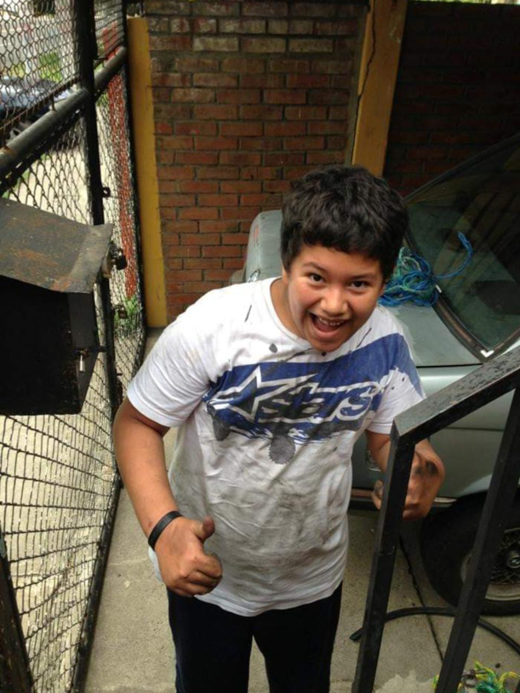

Adolescencia
En mi adolescencia ha sido una época regular de igual manera, ya que he sido un buen estudiante por el lado estudiantil, al igual que desde los 15 años trabajé en en una contrata de Tigo realizando planos por 6 años y hoy en dia me dedico al mundo del call center desafortunadamente, pero tengo fe que algun dia pordede tener una trabajo en el que me sienta cómodo, sin embargo el fallecimiento de mi madre 4 años atrás marcó mi vida para mal en mi perspectiva ya que no tienes con quien mas contar. Pero me he encontrado con buenas personas durante mi adolescencia y parte de mi vida adulta que me ha ayudado a sobrellevar los malos momentos.
